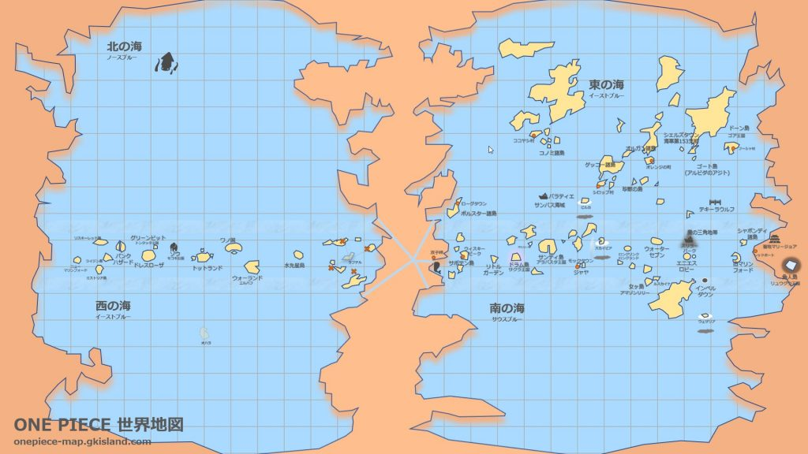

中途半端なものは提供しません。一流の肉を格安で！


当店について
当店は、しちりんを使った本格炭火焼肉店です。
炭火焼肉でも煙などの排気には最新鋭の換気システムを導入しています。
オーダーは、タッチパネルから行ってください。
キャッシュレス歓迎、キャッシュレスの場合は10％オフ！
店舗情報
住所: 〒000-0000 焼肉市美食町1-2-3
電話: 000-456-7890
メール: info@yakiniki.umai.up

ホームに戻る